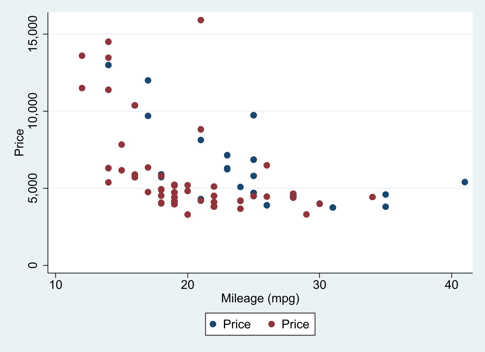

sysuse auto, clear
two scatter price mpg if foreign == 1 || ///
scatter price mpg if foreign == 0
graph export ms1.png, width(1200) replace Make Scatters more Colorful: mscatter
Scatters across groups
Introduction
The program mscatter came as an answer to two questions, often asked on statalist.
- How to produce Scatter plots
bygroups? to each group is labeled? - How can I change the colors, if I have more 15 groups in my graph?
Doing plots that produce this is simple. One just needs to create multiple scatterplots, and combine them with twoway. This will produce you this kind of plot. For example, if I had to produce and join 4 scatter plots (across different groups) I would do the following:
twoway (scatter y x if z ==1, options) ///
(scatter y x if z ==2, options) ///
(scatter y x if z ==3, options) ///
(scatter y x if z ==4, options), ///
overall optionsDoing this for multiple groups, however, can be a pain. Thus, I decided to write a do-file that address this problem.
mscatter: scatter with Multiple groups
First some minimal setup. The latest version of mscatter is available from SSC. You can install it using the following:
ssc install mscatterIn the examples below, I will also use the scheme white2 within [color_style]](https://friosavila.github.io/stataviz/stataviz1.html). See instructions there if you want to install all its components.
Now, how do you produce a scatter with multiple groups. The task is, in fact, simple. If I were to use auto.dta dataset, it would be something like this:

In fact, I have been pointted out to one command by Nick Cox, named linkplot, which may also help you produce similar plots.
ssc install linkplot
linkplot price mpg , link(foreign) asyvars recast(scatter)
graph export ms2.png, width(1200) replace And produces pretty much the same. The limitation: only works with up to 15 groups. But who needs more right? Well, if you need more, you can use mscatter!
set scheme white2 // Lets use white scheme
mscatter price mpg , over(rep78) /// Upto here normal. I use over instead of By
alegend legend(cols(5)) msize(3) /// add a legend with large dots
by(foreign) // and groups by foreign
graph export ms3.png, width(1200) replace But those are easy to do by hand. What if you have many groups. Lets see with some different data:
webuse nlswork
mscatter ln_wage ttl_exp , /// normal
over(age) /// but over many groups!
colorpalette(magma ) /// all color coded
alegend // with a legend to match
graph export ms4.png, width(1200) replace And as I show you before, mscatter can be combined with by()
mscatter ln_wage ttl_exp , over(grade) ///
colorpalette(magma ) by(race, legend(off)) // legend(off) should go here
graph export ms5.png, width(1200) replace Only current limitation, you can use weights (for size of markers) but it will fail, if you have groups without observations based on over and by (difficult to explain and reproduce).
Other features
mscatter has other features that might put it apart from other commands. While the original version was written to take advantage of frames. The current version will also work with earlier Stata versions (at least V14), using preserve/restore commands.
In addition to this, mscatter may also allow you to add fitted plots to your scatter!
Lets see how this works:
webuse nlswork, clear
set seed 10
keep if runiform()<.2
color_style tableau
mscatter ln_wage ttl_exp , over(race) ///
fit(qfitci) ///<-adds quadratic fit with CI
mfcolor(%5) mlcolor(%5) alegend ytitle("Log Wages")
graph export ms6.png, width(1200) replace As you can see, this figure plots log of wages agains total experience across race groups. In addition to this, however, it also adds a fitted plot using quadratic fit using the option fit(qfitci). You can add here other options that are command specific. Of course, with the addition of this, you may want to drop the scatter plot all together
mscatter ln_wage ttl_exp , over(race) ///
fit(qfitci) mfcolor(%5) mlcolor(%5) ///
noscatter /// Asks not to show the scatter points
alegend ytitle("Log Wages")
graph export ms7.png, width(1200) replace Conclusions
mscatter is a data-visualization utility that may enable you to create informative graphs capturing correlations between 2 variables.
While its use may be limited, I believe that those who need it, may find this a good tool to have for their arsenal.
Lastly, try checking the helpfile, where I add other options, not described here.
Til next time!